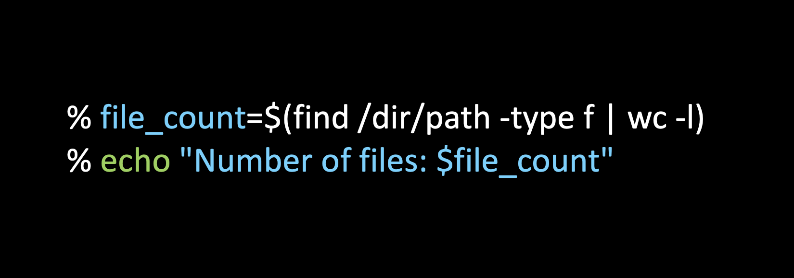

- This is a quick guide manual to advance your understanding of Bash Scripting for real-world application, beyond just one-liner commands.
- To solve specific real-world use cases, like the below need, we will be writing a combination of the commands in a single line (in Section III)
- You will see how to write interactive shell file scripts (in Section IV)

What you will see in this post?
- I. Why Bash Scripting?
- A Brief Intro Bash Scripting
- A Selected List of Single-line Recipes from personal experience
- Shell Scripting Files at a glance
- V. Create your own shell commands!
- Understanding Redirecting of Output and Errors
- Summary
For covering III, IV, and V in a more practical way, I have chosen a directory in my local system titled text_datasets.
I. Why Bash Scripting?
Arguably, Shell Scripting is the often untaught foundation to the most important skills in software engineering
- Why you may ask? You may have seen
Shell Commandsin- Git
- Makefile, VirtualEnv or Any Software Packaging
- Docker, Kubernetes
- Server Administration
- Application Deployment
- Cloud Computing &
- many more places …
- It is often the easiest application to ship, because it directly works with the Kernerl that works with hardware

Image Source: https://homepages.uc.edu/~thomam/Intro_Unix_Text/OS_Organization.html
II. A Brief Intro to Bash Scripting
What is a Linux CLI/Shell Terminal
- A non-graphical text-based interface to the Kernel
- A program to access the features and functionalities offered by kernel
- How instructions flow: Hardware <– Kernel <– Shell/Terminal <– Command Libraries and Applications (like mail) <– User
What is a Shell or Bash?
The shell is the operating system’s command-line interface (CLI) and interpreter for the set of commands that are used to communicate with the system.
Different Types of Shell
- Bourne Shell developed by Steve Bourne at AT&T Labs (sh)
- C shell (csh)
- Korn Shell (ksh) - better version of
sh - Bourne-Again Shell (bash) had features of csh and
ksh - Z Shell (zsh) - A more modern shell adopted by MacOS!
Sources for this section: Refer here and here
III. Common Single-line CLI Recipes from Personal Experience
There are so many bash commands. Here, I attempt to cover those that I use often. Also, it is no use to learn the bash commands in silos. We often use a combination of them in practical use.
I am taking a simple example of a directory of
text_datasetsto explain the use of several bash commands.
If you wish to replicate the section III in the same manner as mine, please download from this Google Drive folder of Xiang Zhang (digression alert: I landed on this dataset when reading a post by Sebastian Raksha)
1. tree
- Purpose: Show the dir and files
senthilkumar.m@BashScripter ~/datasets % tree
.
└── text_datasets
├── ag_news
│ └── ag_news_csv.tar.gz
├── dbpedia
│ └── dbpedia_csv.tar.gz
└── yelp_reviews
└── yelp_review_full_csv.tar.gz
4 directories, 3 files2. find + xrgs
- Purpose: Find the size of the archived files
senthilkumar.m@BashScripter ~/datasets % find . -name "*.tar*" | xargs du -hs
187M ./text_datasets/yelp_reviews/yelp_review_full_csv.tar.gz
12M ./text_datasets/ag_news/ag_news_csv.tar.gz
65M ./text_datasets/dbpedia/dbpedia_csv.tar.gz- Want to know more?:
man xargs,man duorman find
3. tar + sed + find with a for loop
- Purpose: Unzip files across directories
senthilkumar.m@BashScripter ~/datasets % for f in $(find . -name "*.tar*" | sed -e 's|/[^/]*$||g' ); do tar -xvf "$f"/*.tar.* -C "$f"; done
x yelp_review_full_csv/
x yelp_review_full_csv/readme.txt
x yelp_review_full_csv/train.csv
x yelp_review_full_csv/test.csv
x ag_news_csv/
x ag_news_csv/train.csv
x ag_news_csv/test.csv
x ag_news_csv/classes.txt
x ag_news_csv/readme.txt
x dbpedia_csv/
x dbpedia_csv/classes.txt
x dbpedia_csv/test.csv
x dbpedia_csv/train.csv
x dbpedia_csv/readme.txt- Want to know more?:
man tarand- search for the individual arguments on what they do using backward slash
//-x | -v | -z | -f
4. find + wc + grep
- Purpose: Find number of rows in each file in each sub directory
senthilkumar.m@BashScripter ~/*/text_datasets % for f in $(find . -name "*.csv"); do (echo "Number of rows in $f" && wc -l "$f" | grep -o "[0-9]*" && echo); done
Number of rows in ./yelp_reviews/yelp_review_full_csv/test.csv
50000
Number of rows in ./yelp_reviews/yelp_review_full_csv/train.csv
650000
Number of rows in ./ag_news/ag_news_csv/test.csv
7600
Number of rows in ./ag_news/ag_news_csv/train.csv
120000
Number of rows in ./dbpedia/dbpedia_csv/test.csv
70000
Number of rows in ./dbpedia/dbpedia_csv/train.csv
560000- If you are more comfortable writing in multiple lines, you can choose the format below as well. Most terminals support this
senthilkumar.m@BashScripter ~/*/text_datasets % \
for f in $(find . -name "*.csv");
do (echo "Number of rows in $f" && wc -l "$f" | grep -o "[0-9]*" && echo);
done5. find + head + sed
- Purpose: Find number of columns in each file in each sub directory
senthilkumar.m@BashScripter ~/*/text_datasets % for f in $(find . -name "*.csv"); do (echo "*****$f***": && echo "Number of Columns:" && head -n 1 "$f"| sed 's/","/"\n"/g' |wc -l && echo) ; done
*****./yelp_reviews/yelp_review_full_csv/test.csv***:
Number of Columns:
2
*****./yelp_reviews/yelp_review_full_csv/train.csv***:
Number of Columns:
2
*****./ag_news/ag_news_csv/test.csv***:
Number of Columns:
3
*****./ag_news/ag_news_csv/train.csv***:
Number of Columns:
3
*****./dbpedia/dbpedia_csv/test.csv***:
Number of Columns:
2
*****./dbpedia/dbpedia_csv/train.csv***:
Number of Columns:
26. find + head + sed + nl
- Purpose: Human understandable display of 1 line in each file
senthilkumar.m@BashScripter ~/text_datasets % for f in $(find . -name "*train.csv"); do (echo && echo "*********$f*******:" && head -n 1 "$f" | sed 's/,"/\n"/g' | nl); done
*********./yelp_reviews/yelp_review_full_csv/train.csv*******:
1 "5"
2 "dr. goldberg offers everything i look for in a general practitioner. he's nice and easy to talk to without being patronizing; he's always on time in seeing his patients; ..."
*********./ag_news/ag_news_csv/train.csv*******:
1 "3"
2 "Wall St. Bears Claw Back Into the Black (Reuters)"
3 "Reuters - Short-sellers, Wall Street's dwindling\band of ultra-cynics, are seeing green again."
*********./dbpedia/dbpedia_csv/train.csv*******:
1 1
2 "E. D. Abbott Ltd"
3 " Abbott of Farnham E D Abbott Limited was a British coachbuilding business based in Farnham Surrey trading under that name from 1929. A major part of their output was under sub-contract to motor vehicle manufacturers. Their business closed in 1972."- Want to know more?:
man nl
IV. How to write Shell Files
A shell script is a text file that contains a sequence of commands for a UNIX-based operating system.
Tip: If you are planning to use a shell file as executrable, then do
chmod u+x your_shell_script.shbefore executing the files. more details
Shell Script with Positional arguments
senthilkumar.m@BashScripter ~/*/text_datasets % cat basic_shell_with_positional_args.sh
#!/bin/sh
echo "This tutorial is not about $1. It is about $2."
echo "Did you like it? $3"- Shebang line at 1.
#!/bin/shor#!/bin/bashor#!/bin/zsh - Most terminal (CLI interpreters) take care of it even when not expliticity mentioned by assuming it to be
bashorsh
sh basic_shell.sh Linux "Shell Scripting" No
# ./basic_shell.sh
This tutorial is not about Linux. It is about Shell Scripting.
Did you like it? NoShell Script with one-letter keyword arguments and functions
- Things to note below:
getopts,grep,OPTARG,tr,[:upper:]or[:lower:]or[:space:]whileloopif ... else ... fi- how we pass the named arguments from outside the shell file to the bash function
receive_arguments()
senthilkumar.m@BashScripter ~/*/text_datasets % cat shell_w_getopts_args.sh
#!/bin/bash
receive_one_letter_arguments(){
while getopts ":n:a:l:" opt;
do
case ${opt} in
n) NOT=${OPTARG};;
a) ABOUT=${OPTARG} ;;
l) LIKE=${OPTARG} ;;
esac
done
}
what_is_the_tutorial_about(){
echo "This tutorial is not about $NOT. It is about $ABOUT."
}
like_or_not(){
if [ $(echo $LIKE | grep -i -o "^N" | tr '[:upper:]' '[:lower:]') = 'n' ]; then
echo "Did you like it? $LIKE"
echo "What Shell Scripting man !?!"
echo "Who uses such 40+ years old lang"
else
echo "Did you like it? $LIKE"
fi
}
echo "**********************"
echo "Function 1: receiving the arguments from user using 'getopts', 'opt' and 'OPTARG' in a 'while' loop"
receive_one_letter_arguments "$@"
echo "The arguments are \$ABOUT=$ABOUT \$NOT=$NOT \$LIKE=$LIKE"
echo "#################"
echo "Function 2: what is this tutorial about ?"
what_is_the_tutorial_about
echo "#################"
echo "Function 3: Now, tell me the truth ..."
like_or_not
echo "**********************"senthilkumar.m@BashScripter ~/text_datasets % sh shell_w_getopts_args.sh \
-n Linux \
-a "Shell Scripting" \
-l No
**********************
Function 1: receiving the arguments from user using 'getopts', 'opt' and 'OPTARG' in a 'while' loop
The arguments are $ABOUT=Shell Scripting $NOT=Linux $LIKE=No
#################
Function 2: what is this tutorial about ?
This tutorial is not about Linux. It is about Shell Scripting.
#################
Function 3: Now, tell me the truth ...
Did you like it? No
What Shell Scripting man !?!
Who uses such 40+ years old lang
**********************Shell Script with word keyword arguments
- We are about to achieve the same output as above
one-letter argumentapproach - But the script will be a lot simpler with keyword arguments
- Utilities used:
{#A_VARIABLE_NAME}to determine length of the variable,grep,tr,[:upper:]or[:lower:]or[:space:]
#!/bin/bash
receive_word_arguments(){
for ARGUMENT in "$@"
do
KEY_INITIAL=$(echo $ARGUMENT | cut -f1 -d=)
KEY_LENGTH=${#KEY_INITIAL}
KEY=${KEY_INITIAL:2}
VALUE="${ARGUMENT:$KEY_LENGTH+1}"
export "$KEY"="$VALUE"
# echo "$KEY=$VALUE"
done
}
what_is_the_tutorial_about(){
echo "This tutorial is not about $NOT. It is about $ABOUT."
}
like_or_not(){
if [ $(echo $LIKE | grep -i -o "^N" | tr '[:upper:]' '[:lower:]') = 'n' ]; then
echo "Did you like it? $LIKE"
echo "What Shell Scripting man !?!"
echo "Who uses such 40+ years old lang"
else
echo "Did you like it? $LIKE"
fi
}
echo "**********************"
echo "Function 1: receiving the word arguments using the indices of the input {#A_VARIABLE_NAME}"
receive_word_arguments "$@"
echo "The arguments are \$ABOUT=$ABOUT \$NOT=$NOT \$LIKE=$LIKE"
echo "#################"
echo "Function 2: what is this tutorial about ?"
what_is_the_tutorial_about
echo "#################"
echo "Function 3: Now, tell me the truth ..."
like_or_not
echo "**********************"senthilkumar.m@BashScripter ~/text_datasets % sh shell_w_full_kw_args.sh \
--NOT=Linux \
--ABOUT="Shell Scripting" \
--LIKE=No
**********************
Function 1: receiving the word arguments using the indices of the input {#A_VARIABLE_NAME}
The arguments are $ABOUT=Shell Scripting $NOT=Linux $LIKE=No
#################
Function 2: what is this tutorial about ?
This tutorial is not about Linux. It is about Shell Scripting.
#################
Function 3: Now, tell me the truth ...
Did you like it? No
What Shell Scripting man !?!
Who uses such 40+ years old lang
**********************V. Create your own shell commands!
- Create your
shell_file.shwhich is going to act as shell_command. Make it executable:chmod u+x shell_file.sh
- Create your
- Add the shell_file location to $PATH in
~/.bashrc(or if you are using MacOS like me~/.zshrc| source)
- Add the shell_file location to $PATH in
- source the
~/.bashrcor~/.zshrc. Restart your terminal.
- source the
- Run the
shell_file.shas you would a command |shell_file arg1 arg2
- Run the
Example 1: Convert a counting_files_recursively.sh shell file into a command counting_files_recursively
#!/bin/bash
count_files() {
file_count=$(find "$1" -type f | wc -l)
echo "Local Directory: $1"
echo "Number of files: $file_count"
echo
}
# Specify the root directory to start counting files recursively
root_directory=$1
# Call the function for each directory within the root directory
for local_directory in "$root_directory"/*;
do
if [ -d "$local_directory" ]; then
count_files "$local_directory"
fi
donesenthilkumar.m@BashScripter ~/text_datasets % echo "alias counting_files_recursively=/path/to/counting_files_recursively.sh" >> ~/.zshrc && source ~/.zshrc
senthilkumar.m@BashScripter ~/text_datasets % counting_files_recursively ~/text_datasets
Local Directory: ~/text_datasets/dbpedia
Number of files: 7
Local Directory: ~/text_datasets/shell_file_in_path
Number of files: 1
Local Directory: ~/text_datasets/yelp_reviews
Number of files: 6Example 2: Simpler one-line alias command. Converting ls -al into ls_all
senthilkumar.m@BashScripter ~/text_datasets % echo "alias ls_all=ls -al" >> ~/.zshrc && source ~/.zshrc
senthilkumar.m@BashScripter ~/text_datasets % ls_all ~/text_datasetsVI. Understanding Redirects in Shell Scripting
The Typical Ways
>(redirect afresh) ,>>(redirect and append) and|(pipe
- By now you may have got familiarized with the standard ways of redirecting outputs -
>and>>and|
# step 1
/some/local/path % echo "Hello, world!" > output.txt
/some/local/path % cat output.txt
Hello, world!
# step 2
/some/local/path % echo "Additional text" >> output.txt
/some/local/path % cat output.txt
Hello, world!
Additional text
# step 3
/some/local/path % echo "Again, Hello, world!" > output.txt
/some/local/path % cat output.txt
Again, Hello, world!
# step 4
/some/local/path % echo "Hello, world!" | wc -c
13- Note: In the above bash example, by step 3, the
output.txtgets rewritten.
Additional Aids: The File Descriptors (0, 1, and 2)
A file descriptor is a descriptor OR unique identifier OR a index of the
filesthat are opened when a shell file is run.
- A shell file opens 3 files with the file descriptors 0, 1, and 2
0 (stdin): Standard Input
1 (stdout): Standard Output
2 (stderr): Standard Error/some/local/path % cat simple_bash_script_for_reading_stdin.bash
#!/bin/bash
# Variable to store all lines
all_lines=""
# Read each line from stdin and append to the variable
while IFS= read -r line; do
# Process each line (you can replace this with your own logic)
echo "Read line: $line"
# Append the line to the variable
all_lines="$all_lines$line"
done
/some/local/path % cat file_input.txt
Hello,
This is an example text file.
It contains multiple lines.
Each line is processed by the program script.
You can replace this content with your own data.
/some/local/path % bash simple_bash_script_for_reading_stdin.bash < file_input.txt > file_output.txt
/some/local/path % cat file_output.txt
Read line: Hello,
Read line: This is an example text file.
Read line: It contains multiple lines.
Read line: Each line is processed by the program script.
Read line: You can replace this content with your own data.- In the above example,
program < file_input > file_outputstructure is followed. file_input.txtwas the stdin (0)file_output.txtwas the standard output (1)- If I introduce some error in the
a_simple_python_file_with_error.py, we can capture error alone separately
/some/local/path % cat a_simple_python_file_with_error.py
print("output line 1")
print("output line 2")
a=b+1 #this will throw an error as `b` is not defined
/some/local/path % python a_simple_python_file_with_error.py 2>error.txt 1>output.txt
/some/local/path % cat error.txt
Traceback (most recent call last):
File "/a_simple_python_file_with_error.py", line 4, in <module>
a=b+1 #this will throw an error as `b` is not defined
NameError: name 'b' is not defined
/some/local/path % cat output.txt
output line 1
output line 2- if you want the error and the output to be redirected to the same file, you can use
>&or2>&1
/some/local/path % python a_simple_python_file_with_error.py > output_with_error.txt 2>&1
# Or the following also works
# /some/local/path % python a_simple_python_file_with_error.py >& output_with_error.txt
/some/local/path % cat output_with_error.txt
output line 1
output line 2
Traceback (most recent call last):
File "/a_simple_python_file_with_error.py", line 4, in <module>
a=b+1 #this will throw an error as `b` is not defined
NameError: name 'b' is not defined/dev/null
If you are wondering, how to ignore some outputs or errors from being printed or displayed, redirecting them to /dev/null is the answer
# ignore both stderr (2) and stdout (1)
/some/local/path % python a_simple_python_file_with_error.py > /dev/null 2>&1
# ignore the stderr (2)
/some/local/path % python a_simple_python_file_with_error.py 2>/dev/null
output line 1
output line 2
# ignore only the stdout (1)
/some/local/path % python a_simple_python_file_with_error.py 1>/dev/null
Traceback (most recent call last):
File "/a_simple_python_file_with_error.py", line 4, in <module>
a=b+1 #this will throw an error as `b` is not defined
NameError: name 'b' is not definedVII. Summary
- In this post, we have seen
- how to use a combination of shell commands in a single line,
- how to write shell script files with arguments passed to it and
- how to create your own shell commands
Concluding Remarks …
Why is Shell Scripting so hard?
- Complexity compounds | Commands like
awkandsedare progamming lang on their own - Every quote, space and stringed together commands have meaning
- Less errors | More unexpected behaviour
Where is Shell Scripting most useful?
- When the commands are only 5-20 lines long
- Small repetitive tasks. E.g. For small needs involving AWS, small scripting jobs with
jmespath
- Small repetitive tasks. E.g. For small needs involving AWS, small scripting jobs with
for f in *.csv
do
echo $f...
some transformation
done- A pure shell script written 15-20 years ago could still yield the same result today
- Easier than packaging a Python application | Build process is smaller
- Shell in combination with other language is more useful
Where Shell Scripting can be avoided?
- Co-development is hard. Interpretability is tough.
- Errors do not always stop your flow. It will go to the next command
- When the shell script becomes very complicated, better to go with your programming lang of choice
Unequivocally, Bash Scripting is definitely a useful skill to know in your toolbox